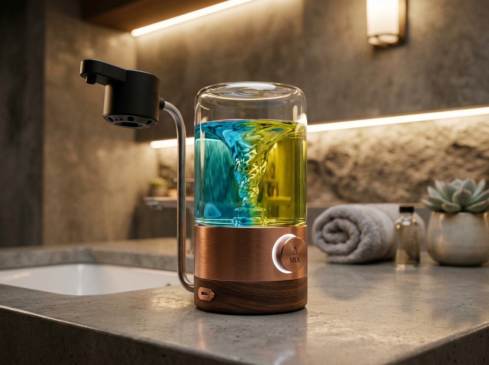
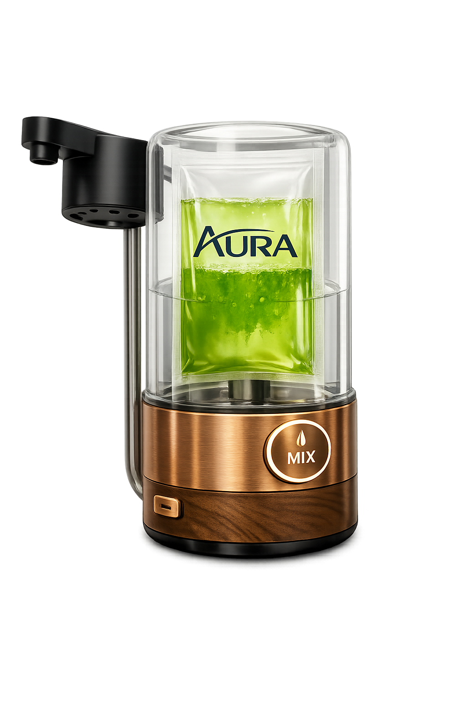
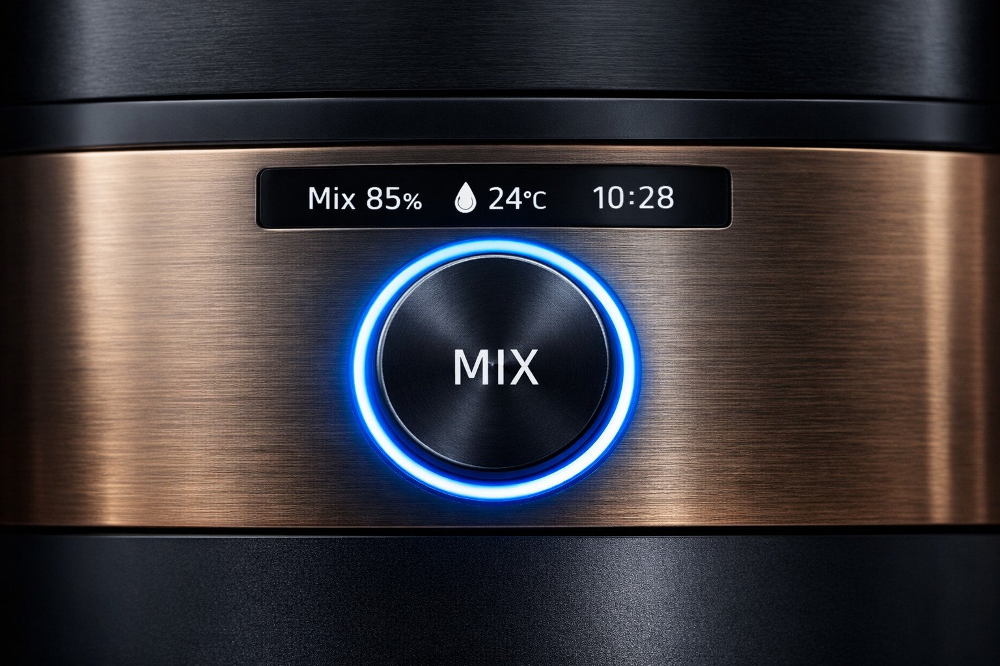
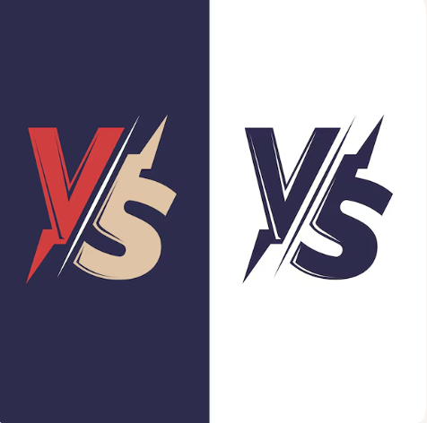

El sistema que elimina la botella de jabón para siempre.
AURA™ combina sachets concentrados en PVA con un dispenser diseñado para el hogar que disuelve, mezcla y dispensa jabón premium de forma automática.

Propuesta de valor en una frase
“Deja caer un sachet. El dispenser hace el resto: disuelve, mezcla y entrega jabón premium en segundos.”
Cómo funciona

1. El sachet AURA Mix™
Un sachet de PVA biodegradable encapsula jabón concentrado.

2. Cámara de disolución
El dispenser activa la disolución del PVA con agua.

3. Mezcla automática
Un mecanismo interno asegura concentración constante.
4. Dispensado
El usuario recibe jabón listo para usar.
Impacto ESG
Ambiental
- Elimina entre 50 y 100 botellas plásticas por hogar al año.
- Reduce más del 90% del peso y volumen de transporte.
Social
- Integra sostenibilidad en un hábito diario.
Gobernanza
- Proyecto gestionado bajo estándares PMI/PMBOK.
Propiedad Intelectual
AURA™ se apoya en tecnologías probadas integradas en un sistema único.
Fase 0 – Statement of Value
La Fase 0 establece por qué AURA™ debe existir.
Mercado & Potencial Comercial
AURA™ se dirige a hogares premium en Canadá y Norteamérica.
Proyección Financiera (1–3 años)
Modelo de ingresos mixto: hardware + suscripción.
Retorno de la Inversión (ROI)
Ingresos recurrentes aceleran la recuperación de CAC.
Comparativa & Competidores

AURA™ ocupa un espacio de “only-ness”.
Investor Pitch
AURA™ representa una nueva categoría: higiene premium sostenible.
Roadmap 2026–2029
Validación, lanzamiento, escalamiento y ecosistema.
Sostenibilidad & Impacto
AURA™ convierte la sostenibilidad en un hábito invisible.
Tecnología del Dispensador
Diseñado específicamente para el hogar.
Equipo & Gobierno del Proyecto
Desarrollado bajo MacDave Inc. y VERSUS™.
Preguntas Frecuentes (FAQ)
¿Qué es AURA™?
Sistema integrado de higiene premium.